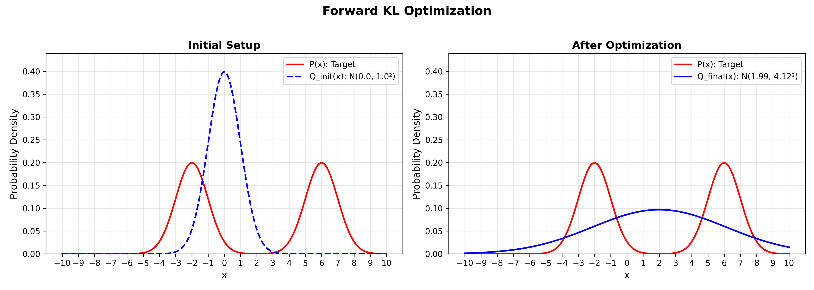
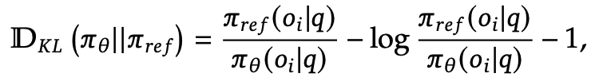

If you've ever trained a variational autoencoder, fine-tuned a language model, or implemented policy optimization in reinforcement learning, you've encountered KL divergence. But here's the catch: there are two ways to compute it, and they lead to fundamentally different behaviors.
Most machine learning practitioners know that KL divergence measures how different two probability distributions are. What's less obvious is that $D_{KL}(P||Q) \neq D_{KL}(Q||P)$. This asymmetry determines whether your model will be conservative or risky, whether it covers all modes or focuses on one, and ultimately shapes how your training behaves.
While this topic has been discussed before, most explanations stay abstract. This post takes a different approach: we'll implement a toy example from scratch, visualize the actual optimization dynamics, and then systematically connect the behavior to diverse ML applications from language model pretraining to RLHF, VAEs, and knowledge distillation. By the end, you'll have both the intuition and the practical context to recognize which KL divergence you're using and why it matters.
A Quick Reminder: What is KL Divergence?
In simple terms, KL divergence measures how one probability distribution differs from another:
$$D_{KL}(P||Q) = \sum_x P(x) \log \frac{P(x)}{Q(x)}$$Or in the continuous case:
$$D_{KL}(P||Q) = \int P(x) \log \frac{P(x)}{Q(x)} dx$$It's always non-negative, and equals zero only when P and Q are identical. (Can you see why? Hint: Jensen's Inequality.) Jensen's inequality states that for a convex function f: E[f(X)] ≥ f(E[X]). Apply this to -log (which is convex) and the ratio P(x)/Q(x).
Ok so KL feels like some kind of distance measure... or is it? How can it be a distance measure when it's not symmetric!
In reality, KL measures how inefficient it is to pretend samples come from $Q$ when they really came from $P$. Think about it as some sort of a penalty. If you know the true distribution $P$, you get zero KL. Negative KL would mean you did better than the true distribution P, but since you can't do better on average → no negative KL.
So to unwrap this asymmetry, we will do a simple experiment. But before that, let's give more context to the problem. Talking about probability distributions P and Q in abstract terms might be confusing, so let's connect it to something we already know.
In the context of LLM training, think of it this way:
- P: the target distribution: could be your data distribution (your corpus), the reference model, or a teacher model
- Q: your model: the one you're actively training and updating, usually an LLM, policy/student/etc.
For example:
- In pretraining language models, P is the true data distribution and Q is your LLM learning to approximate it
- In RLHF, P is your pre-trained base model (to prevent drift) and Q is your policy being optimized with RL (both LLMs in this case)
- In knowledge distillation, P is the teacher model and Q is the student
With this convention:
- Forward KL: $D_{KL}(P||Q) = \mathbb{E}_{x \sim P}\left[\log \frac{P(x)}{Q(x)}\right]$ becomes expectation under the target P
- Reverse KL: $D_{KL}(Q||P) = \mathbb{E}_{x \sim Q}\left[\log \frac{Q(x)}{P(x)}\right]$ becomes expectation under your model Q
The Experiment: Fitting a Unimodal to a Bimodal Distribution
Ok so what's the big deal? What happens when you choose one over the other? What do we usually use in practice?
To answer all these questions, we'll do a simple toy experiment. Consider the following scenario:
- Target P: A bimodal Gaussian mixture with two equally weighted Gaussians centered at x = -2 and x = +6, each with unit variance
- Model Q: A single Gaussian with parameters $\mu$ (mean) and $\sigma$ (standard deviation) that we'll optimize
This setup mirrors real ML problems: your data (or reference/teacher model) has multiple modes, but your model has limited capacity. How does the choice of KL divergence affect what Q learns?
Setting Up the Distributions
First, let's define an abstract class for a probability distribution. We want it to have two methods:
sample: Since we have expectations, we will need to do Monte Carlo estimation, i.e., to generate and average over random samples from the distribution Exact KL is rarely computed in modern ML systems. Expectations are intractable, so KL is usually estimated from samples, so we'll do that as well.log_prob: This method computes the log-probability of a given input under the distribution, simply to compute the $\log P(x)$ and $\log Q(x)$ that appear in the equations above.
class Distribution(ABC):
"""
Abstract base class for probability distributions.
All distributions must implement sample() and log_prob().
"""
@abstractmethod
def sample(self, n_samples):
"""Draw n_samples from the distribution."""
pass
@abstractmethod
def log_prob(self, x):
"""Compute log probability density at x."""
passNext, if you forgot your probabilities (shame on you), let's remind ourselves what a simple 1-D Gaussian Distribution looks like
$$x \sim \mathcal{N}(\mu, \sigma^2), \quad f(x) = \frac{1}{\sigma\sqrt{2\pi}} \exp\!\left(-\frac{(x-\mu)^2}{2\sigma^2}\right)$$where $\mu$ is the mean and $\sigma$ is the standard deviation. Now let's implement the two methods:
sample:
We could naively sample using a built-in function such as
torch.normal(mean=self.mu, std=self.sigma, size=(1, n_samples)).
This produces correct samples but it causes a problem once we start
training.
Remember that when optimizing our model Q(x), we are actually
learning the parameters μ and σ.
With direct sampling, the randomness is injected inside the sampling
operation itself, which makes the output non-differentiable with respect to
these parameters. As a result, gradients cannot properly flow back to
μ and σ.
To restore differentiability, we use the reparameterization trick: This trick was popularized by Kingma & Welling in their 2014 VAE paper, enabling backpropagation through stochastic nodes.
$$ x = \mu + \sigma \,\epsilon, \qquad \epsilon \sim \mathcal{N}(0, 1) $$
Now the source of randomness is entirely isolated in
ε, which is independent of the learnable parameters.
The sampling step becomes a deterministic function of
μ and σ, allowing gradients to flow cleanly
through the computation graph.
log_prob: Starting from the Gaussian density:
class GaussianDistribution(Distribution):
"""Gaussian Distribution for gradient-based optimization."""
def __init__(self, mu, sigma):
self.mu = torch.as_tensor(mu, dtype=torch.float32).requires_grad_(True)
self.sigma = torch.as_tensor(sigma, dtype=torch.float32).requires_grad_(True)
def sample(self, n_samples):
"""Reparameterization trick: x = mu + sigma * eps"""
eps = torch.randn(n_samples)
return self.mu + self.sigma * eps
def log_prob(self, x):
"""Compute log P(x) for torch tensors."""
return -0.5 * torch.log(2 * torch.pi * self.sigma**2) - 0.5 * (x - self.mu)**2 / self.sigma**2Now let's define our target distribution P(x), a mixture of Gaussians. A Gaussian Mixture Model (GMM) with K components can be written as
$$P(x) = \sum_{k=1}^{K} \pi_k \, \mathcal{N}(x \mid \mu_k, \sigma_k^2), \qquad \text{with } \sum_{k=1}^{K} \pi_k = 1$$ where:- $\pi_k$ are the mixture weights
- $\mu_k$ are the component means
- $\sigma_k$ are the component standard deviations
sample: Drawing from a mixture follows the definition directly:
- Sample a discrete component index $z \sim \mathrm{Categorical}(\pi_1,\ldots,\pi_K)$
- Sample from the chosen Gaussian component $x \sim \mathcal{N}(\mu_z, \sigma_z^2)$
In this experiment, $P(x)$ is a fixed reference distribution: we are not optimizing its parameters, so we don't need the sampling operation to be differentiable. That means we can use simple numpy sampling (fast and straightforward) without worrying about the reparameterization trick.
log_prob: Computing $\log P(x)$ requires care. Recall that for a mixture:
so we need to find a numerically stable log-sum-exp formulation. Let's derive it below:
This expression is exactly a log-sum-exp. Computing it naively can be numerically unstable when some $a_k(x)$ values are very large or very small. Without the max subtraction, exp(a_k) can overflow to infinity or underflow to zero, causing NaN gradients. This trick is standard in softmax implementations too.
To stabilize the computation, we use the standard identity:
where $m = \max_k a_k$. This is what the code below implements.
class GaussianMixtureDistribution(Distribution):
def __init__(self, means, sigmas, weights):
self.means = torch.tensor(means, dtype=torch.float32)
self.sigmas = torch.tensor(sigmas, dtype=torch.float32)
self.weights = torch.tensor(weights, dtype=torch.float32)
self.weights = self.weights / self.weights.sum() # normalize
self.n_components = len(means)
def sample(self, n_samples):
"""Sample from the mixture"""
components = np.random.choice(
self.n_components,
size=n_samples,
p=self.weights.numpy()
)
samples = np.random.normal(
self.means.numpy()[components],
self.sigmas.numpy()[components]
)
return torch.tensor(samples, dtype=torch.float32)
def log_prob(self, x):
"""Compute log P(x) using log-sum-exp trick"""
log_probs = []
for i in range(self.n_components):
log_gaussian = -0.5 * torch.log(2 * torch.pi * self.sigmas[i]**2) \
- 0.5 * (x - self.means[i])**2 / self.sigmas[i]**2
log_probs.append(torch.log(self.weights[i]) + log_gaussian)
log_probs = torch.stack(log_probs)
max_log = torch.max(log_probs, dim=0)[0]
return max_log + torch.log(torch.sum(torch.exp(log_probs - max_log), dim=0))Computing KL
Next, let's see how to compute the KL divergence in practice. Forward KL is defined as:
$$D_{KL}(P||Q) = \mathbb{E}_{x \sim P}[\log P(x) - \log Q(x)]$$The key detail is the distribution inside the expectation: samples are drawn from $P$.
In practice, we approximate this expectation using Monte Carlo:
- Sample $x^{(i)} \sim P(x)$
- Evaluate $\log P(x^{(i)})$ and $\log Q(x^{(i)})$
- Average the difference
We already have our handy functions, which makes the code very simple:
def forward_kl(p, q, n_samples=10000):
"""
Compute KL(P||Q) = E_P[log P(x) - log Q(x)]
Sample from P, evaluate both P and Q.
"""
x = p.sample(n_samples)
return torch.mean(p.log_prob(x) - q.log_prob(x))Reverse KL swaps the roles:
$$D_{KL}(Q||P) = \mathbb{E}_{x \sim Q}[\log Q(x) - \log P(x)]$$Now the expectation is taken under Q, i.e. we sample from the model itself.
def reverse_kl(p, q, n_samples=10000):
"""
Compute KL(Q||P) = E_Q[log Q(x) - log P(x)]
Sample from Q, evaluate both Q and P.
"""
x = q.sample(n_samples)
return torch.mean(q.log_prob(x) - p.log_prob(x))Forward KL: Minimizing KL(P||Q)
Finally! Let's get to the optimization part we've been waiting for. To keep things simple, we will not use a built-in PyTorch optimizer. Instead, we will implement simple gradient descent. But we don't have to worry about computing the gradient ourselves. We can leave that part to PyTorch's autograd.
By the way, if you're thinking to yourself: “Wait… I've fine-tuned models before and I never explicitly used a KL loss?” You're not wrong. Since $\log P(x)$ is constant, doesn't depend on $Q$'s parameters, we can safely drop it and minimizing $-\mathbb{E}_{x \sim P}[\log Q(x)]$ is equivalent, and that's just the familiar cross-entropy (negative log-likelihood) loss you're probably used to in PyTorch! This is why you'll rarely see "forward KL" mentioned explicitly in pretraining code.
def optimize_forward_kl(p, mu_init=0.0, sigma_init=1.0, lr=0.1, n_steps=1000, n_samples=1000):
"""
Optimize Q to minimize KL(P||Q) using gradient descent.
Loss: E_P[-log Q(x)]
Sample from P (fixed), compute -log Q(x), backprop through Q's parameters.
"""
# Initialize Q's parameters
mu = torch.tensor(mu_init, requires_grad=True)
sigma = torch.tensor(sigma_init, requires_grad=True)
loss_history = []
for step in range(n_steps):
# Create Q with current parameters
q = GaussianDistribution(mu, sigma)
# Compute loss: E_P[-log Q(x)]
loss = forward_kl(p, q, n_samples)
# Backprop
loss.backward()
# Gradient descent update
with torch.no_grad():
mu -= lr * mu.grad
sigma -= lr * sigma.grad
# Zero gradients
mu.grad.zero_()
sigma.grad.zero_()
loss_history.append(loss.item())
if step % 100 == 0:
print(f"Step {step}: Loss = {loss.item():.4f}, mu = {mu.item():.4f}, sigma = {sigma.item():.4f}")
return mu.item(), sigma.item(), loss_historyOutput:
Step 0: Loss = 8.8810, mu = 0.1893, sigma = 2.9083
Step 100: Loss = 0.7901, mu = 1.1521, sigma = 4.0272
Step 200: Loss = 0.7516, mu = 1.5349, sigma = 4.1245
Step 300: Loss = 0.7012, mu = 1.7554, sigma = 4.1338
Step 400: Loss = 0.7414, mu = 1.8741, sigma = 4.1251
Step 500: Loss = 0.7162, mu = 1.9375, sigma = 4.1203
Step 600: Loss = 0.7091, mu = 1.9555, sigma = 4.1231
Step 700: Loss = 0.7588, mu = 1.9747, sigma = 4.1216
Step 800: Loss = 0.7579, mu = 1.9890, sigma = 4.1182
Step 900: Loss = 0.7465, mu = 1.9980, sigma = 4.1202
Final parameters: mu = 1.9926, sigma = 4.1189Let's visualize!
What happened? Recall our target P has modes at x = -2 and x = +6. Q learned to center itself at μ ≈ 2 (between the two modes) with a large σ ≈ 4.1 that covers both peaks.
Why? We're sampling from P and maximizing $\log Q(x)$, meaning we are asking $Q$ to explain the samples from $P$. So when x comes from either mode of $P$, $Q$ must assign reasonable probability to both regions. If $Q$ focused on just one mode, it would assign near-zero probability to samples from the other, leading to $\log Q(x) \rightarrow -\infty$.
This is mode-covering behavior: forward KL penalizes Q heavily when Q(x) ≈ 0 but P(x) > 0.
Reverse KL: Minimizing KL(Q||P)
Now let's check out what happens in the other direction.
def optimize_reverse_kl(p, mu_init=0.0, sigma_init=1.0, lr=0.01, n_steps=1000, n_samples=1000):
"""
Optimize Q to minimize KL(Q||P) using gradient descent.
Loss: E_Q[log Q(x) - log P(x)]
Sample from Q using reparameterization, compute log Q(x) - log P(x), backprop.
"""
# Initialize Q's parameters
mu = torch.tensor(mu_init, requires_grad=True)
sigma = torch.tensor(sigma_init, requires_grad=True)
loss_history = []
for step in range(n_steps):
# Create Q with current parameters
q = GaussianDistribution(mu, sigma)
# Compute loss: E_Q[log Q(x) - log P(x)]
loss = reverse_kl(p, q, n_samples)
# Backprop
loss.backward()
# Gradient descent update
with torch.no_grad():
mu -= lr * mu.grad
sigma -= lr * sigma.grad
# Zero gradients
mu.grad.zero_()
sigma.grad.zero_()
loss_history.append(loss.item())
if step % 100 == 0:
print(f"Step {step}: Loss = {loss.item():.4f}, mu = {mu.item():.4f}, sigma = {sigma.item():.4f}")
return mu.item(), sigma.item(), loss_historyOutput:
Step 0: Loss = 2.6755, mu = -0.0181, sigma = 1.0046
Step 100: Loss = 0.9817, mu = -1.2403, sigma = 1.0532
Step 200: Loss = 0.7341, mu = -1.7184, sigma = 1.0109
Step 300: Loss = 0.6986, mu = -1.9010, sigma = 1.0004
Step 400: Loss = 0.6933, mu = -1.9620, sigma = 0.9978
Step 500: Loss = 0.6935, mu = -1.9849, sigma = 0.9978
Step 600: Loss = 0.6932, mu = -1.9952, sigma = 0.9995
Step 700: Loss = 0.6930, mu = -2.0038, sigma = 1.0004
Step 800: Loss = 0.6928, mu = -2.0021, sigma = 0.9946
Step 900: Loss = 0.6931, mu = -2.0001, sigma = 1.0030
Final parameters: mu = -2.0000, sigma = 1.0037Completely different! Q collapsed onto the left mode: $\mu ≈ -2$, $\sigma ≈ 1$. It ignored the right mode entirely.We initialized μ = 0 (closer to the left mode) to break symmetry. Starting at $\mu = 2$ could converge to either mode. This initialization sensitivity is a real issue in practice. Reverse KL can get stuck in local optima, which is why techniques like annealing or multiple restarts are sometimes used.
Why? We are sampling from $Q$ and evaluating $\log P(x)$. In other words, we use $P$ to score samples proposed by $Q$. Any mass that $Q$ places in low-probability regions of $P$ (e.g. between the modes, where $P(x) \approx 0$) gets heavily penalized since $\log P(x) \to -\infty$.
The safest strategy is therefore to concentrate all probability mass in a single high-density region of $P$. To assign non-negligible mass to both modes, a unimodal Gaussian must widen, which inevitably increases mass in low-density regions (including between the modes). Reverse KL penalizes that. The result: pick one mode and commit. Nothing to lose.
This is mode-seeking behavior: reverse KL penalizes Q when Q(x) > 0 but P(x) ≈ 0.
The Takeaway
Here's the intuition to remember:
- Forward KL $D_{KL}(P||Q)$: "Encourages behavioral cloning, prioritizes coverage" You sample from the target P and ask Q to explain those samples. If P has probability somewhere and Q doesn't, you get infinite penalty. Result: Q spreads out to cover all of P's modes, even if it means putting mass in low-probability regions Mode-covering, conservative, recall-oriented.
- Reverse KL $D_{KL}(Q||P)$: "Encourages specialization, prioritizes precision" You sample from your model Q and ask P to validate those samples. If Q puts mass where P doesn't, you get infinite penalty. Result: Q collapses onto P's highest-density regions and ignores the rest. Mode-seeking, confident, precision-oriented.
Quiz Time!
Let's apply what we learned to real ML problems.
Pre-training / SFT
You're training a gigantic LLM $Q_\theta(x)$ on the internet. The data distribution, call it $P_{data}$, is messy, multimodal, long-tailed, and full of weird edge cases. Which KL direction do you choose?
Think about it: You have a massive corpus of Wikipedia, books, code, Reddit. Your goal is to learn a model that captures all of this. What matters most?
You cannot afford to miss real patterns. But if your model occasionally hallucinates? That's fine.
This screams forward KL: sample from the data, force the model to explain it. Miss something real → infinite penalty. Hallucinate something extra → no big deal.
The math: The standard training objective is negative log-likelihood:
$$\mathcal{L} = \mathbb{E}_{x \sim P_{data}}[-\log Q_\theta(x)]$$Which equals:
$$D_{KL}(P_{data} || Q_\theta) = \text{constant} + \mathbb{E}_{x \sim P_{data}}[-\log Q_\theta(x)]$$Bonus: Reverse KL wouldn't even work here! It requires sampling from $Q_\theta$ (random noise early on) and even worse, evaluating $P_{data}(x)$. But we don't have a density for the data, just samples! Forward KL is the only practical choice.
RLHF Objective
Ok, you've pre-trained your model. Now you want to align it with human preferences. You have a reward model $R(x)$ trained on human feedback, and you're optimizing a policy $Q_\theta$. The core RL objective is
$$\max_\theta\; \mathbb{E}_{x \sim Q_\theta}[R(x)]$$Which KL direction does this resemble?
Think about it: You want your model to produce high-reward outputs. You don't care about covering every possible good response. You just want to find the best ones and commit to them.
This is mode-seeking behavior. You're not trying to spread probability across all decent answers. You want to concentrate on the peaks of the reward landscape.
Notice the structure: you sample from your model $Q_\theta$, then evaluate those samples. That's exactly reverse KL's signature, expectation under Q.
The math: If we define an "ideal" distribution $P^*(x) \propto \exp(R(x)/\beta)$ (high reward = high probability) then we can derive:
$$D_{KL}(Q_\theta || P^*) = -\frac{1}{\beta}\mathbb{E}_{x \sim Q_\theta}[R(x)] + \text{constant}$$So maximizing expected reward is literally minimizing reverse KL to this reward-shaped target.
Important: This reverse KL is to an implicit reward-shaped target distribution, not to a reference model. In practice, we add a second KL term to keep the policy grounded, that's what comes next.
RLHF Regularization
In practice, we add a KL penalty to keep the policy close to a reference model:
$$\max_\theta\; \mathbb{E}_{x \sim Q_\theta}\big[R(x) - \beta \, D_{KL}(?)\big]$$Which direction is commonly implemented for this KL penalty?
Think about it: The KL penalty prevents your policy from going off the rails with reward hacking, generating gibberish that somehow scores high, etc. What behavior do we want?
We want to say: "You can focus on high-reward outputs (prune modes), but you cannot invent completely new behaviors the reference model wouldn't produce." Stay within the reference model's support.
That's reverse KL! $D_{KL}(Q_\theta || Q_{ref})$ penalizes Q when it puts mass where the reference doesn't. You can narrow down (mode-seek toward high reward), but you can't expand into territory the reference never explored.
Forward KL would do the opposite: force Q to cover everything the reference covers, defeating the purpose of RLHF (we want to specialize, not stay generic).
Connection to the previous quiz: We're still using reverse KL but now the target is the reference model, not the reward distribution. Same KL direction, different constraint.
More Examples
There are many more interesting examples: variational autoencoders, knowledge distillation, and out-of-distribution detection. Sometimes both forward and reverse KL may be viable depending on the data and desired outcome.
I want to share a nice real-world example in a paper I recently read where the direction of KL matters. The paper is trying to solve machine unlearning. Wang et al. “Balancing Forget Quality and Model Utility: A Reverse KL-Divergence Knowledge Distillation Approach for Better Unlearning in LLMs.” NAACL 2025. Paper Suppose a language model was trained on data containing a sensitive fact, such as "John Smith's SSN is 123-45-6789." The goal is to remove this specific fact while keeping the rest of the model intact and useful.
The authors define a small forget set containing the data to be erased, and construct a teacher distribution that explicitly downweights tokens whose probabilities were boosted by this forget set (for example, the SSN digits), while leaving unrelated behavior unchanged. But the teacher model is not great, it has a deliberately distorted distribution meant only to guide learning.
They then distill a student model from this teacher using reverse KL. Because reverse KL weights errors by the student's own probabilities, it strongly penalizes the model whenever it assigns high probability to forbidden tokens. If the student still tries to output “123-45-6789,” reverse KL “hammers” it. Forward KL, by contrast, would be more forgiving and could allow some leakage.
Estimating KL in Practice
A final note: When reading ML papers and code, you might be surprised to see KL written in a completely different form. For example, in the famous DeepSeek R1 paper, they use this formula: Guo et al. "DeepSeek-R1: Incentivizing Reasoning Capability in LLMs via Reinforcement Learning." arXiv 2025. Paper
While this might seem weird, remember that in practice we always estimate KL using Monte Carlo sampling because computing the exact expectation is intractable. The textbook discrete KL formula then becomes just one of many possible Monte Carlo estimators, and a naive one at that!
This goes back to the age-old question of estimators: the bias-variance trade-off. The naive Monte Carlo estimator $\frac{1}{N}\sum_i \log \frac{P(x_i)}{Q(x_i)}$ can have high variance. A single sample where $Q(x)$ is very small (but $P(x)$ is not) can dominate the entire estimate and cause extreme variance.
For that reason, people look for better estimators. I won't expand more here as this has been extensively discussed. A good resource is John Schulman's blog post where he tests different KL estimators. His conclusion? A particularly effective low-variance estimator adds a correction term to the naive estimator: Schulman, J. "Approximating KL Divergence." Blog post a great deep dive into practical KL estimation.
$$\hat{D}_{KL}(P||Q) = (r - 1) - \log r \quad \text{where } r = \frac{P(x)}{Q(x)}$$Look familiar? That's exactly what the DeepSeek paper uses :)
Citation
Please cite this work as:
Hamad, Hassan, "Forward vs Reverse KL Divergence: Why the Direction Matters", hassanhamad.com, Jan 2026.Or use the BibTeX citation:
@article{hamad2026kl,
author = {Hassan Hamad},
title = {Forward vs Reverse KL Divergence: Why the Direction Matters},
journal = {hassanhamad.com},
year = {2026},
note = {https://hassanhamad.com/blog/forward-vs-reverse-kl/},
}